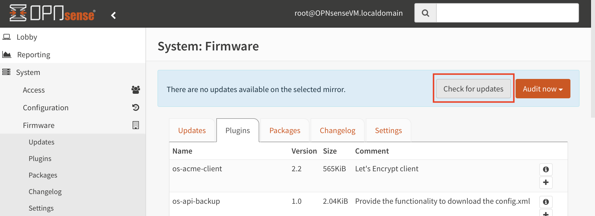
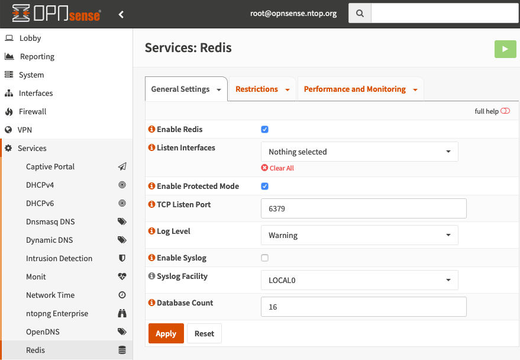

OPNsense
ntopng can be installed on OPNsense as plugin using the Web interface (recommended) or using the command line. In both cases the ntop repository for FreeBSD should be configured as described at https://www.ntop.org/support/documentation/software-installation/.
Warning
ntopng will create files on your OPNsense device to store traffic data. If you have a device with limited disk space, please configure ntopng to store only a few timeseries to disk othewise you might fill all the available disk space and make your system unstable.
Repository Configuration
Log into the OPNsense Shell as administrator (select option 8).

OPNsense Shell
And install the repository using the command provided at https://www.ntop.org/support/documentation/software-installation/ (you can cut&paste the command below).
pkg add https://packages.ntop.org/FreeBSD/FreeBSD:15:amd64/latest/ntop-1.0.pkg
The output should look like the below.

ntop Repository Installation
Plugin Installation
The ntopng plugin can be installed from Shell or through the OPNsense web GUI.
Note
Plugins installation in OPNsense requires you to log in as administrator.
Log into the OPNsense Shell as administrator (select option 8) and run:
pkg update
pkg install os-ntopng-enterprise os-redis
Alternatively you can point the browser to the OPNsense management page and install the plugins from the user interface. Go to the System > Firmware > Plugins page, and click on the Check for updates.

Plugins - Check For Updates
The os-ntopng-enterprise plugin should appear in the list, in addition to the built-in os-ntopng plugin, which does not provide enhanced and Enterprise features (please make sure you remove it in case the latter is already installed).

ntopng and Redis Plugins Installation
Install the os-ntopng-enterprise and the os-redis plugins (which is a requirement) by clicking on the + symbol.
Warning
The installation log of os-ntopng-enterprise may ask to execute commands to start and enable redis.
Ignore those commands as redis will be managed from its plugin os-redis.
To configure the os-redis plugin, go to Services > Redis, select Enable Redis and click Apply.

Redis Configuration
Plugin os-ntopng-enterprise configuration is shown in the following section.
ntopng Configuration
License
Note
ntopng Community Edition is free of charge and does not require a license.
To run a licensed version of ntopng, a license key needs to be generated. To generate a license key, ntopng Version and System ID are required. To obtain this information go to Services > ntopng Enterprise > Settings > License.

ntopng Info
The link at the bottom of the page can be followed to generate the license key.
The license can be installed through the same page by pasting it in the License Key box and saving the configuration. The service should be restarted in the General page.
In order to run ntopng in Community mode please check the Community Mode flag, save the configuration and restart the service through the General page.
Service
Going to Services > ntopng Enterprise > Settings > General it is possible to configure the ntopng service. A basic configuration usually includes the below steps:
Enable the service by checking Enable ntopng
Configure a port and select a Certificate to run the GUI in HTTPS-only mode

ntopng Configuration
Save the configuration and run the service. A link at the bottom of the page will redirect you to the ntopng Web GUI.
By default ntopng analyses traffic from all the interfaces. Select the advanced mode to select a specific interface. Alternatively it is possible to use the Connect to nProbe switch to collect traffic information from a local nProbe instance (please take a look at the os-nprobe nProbe plugin guide).
Common Issues
Failure Running ntopng
A common issue on FreeBSD which is preventing ntopng from running and even showing Version and License information under Settings > License, is a corrupted Redis database. In order to quickly fix this it is required to remove the database files under /var/db/redis/*.rdb and restart the service (or reboot the machine).
Failure Adding the Repository
Some users experienced issues adding the ntop repository in OPNsense with a “Certificate verification failed” message. This seems to be due to an issue with the ACME plugin. Manually importing LE root and intermediate CA chain seems to fix this issue. Please read https://forum.opnsense.org/index.php?topic=25178.0 for more info.
libsodium.so.23 not found
ntopng on FreeBSD depends on libsodium.so.23, however OPNsense 24.x provides libsodium.so.26, this leads to a failure when trying to run ntopng:
“Shared object libsodium.so.23 not found, required by ntopng”
As a workaround until the library version is aligned, this can be fixed by manually creating a symlink:
ln -s /usr/local/lib/libsodium.so.26 /usr/local/lib/libsodium.so.23